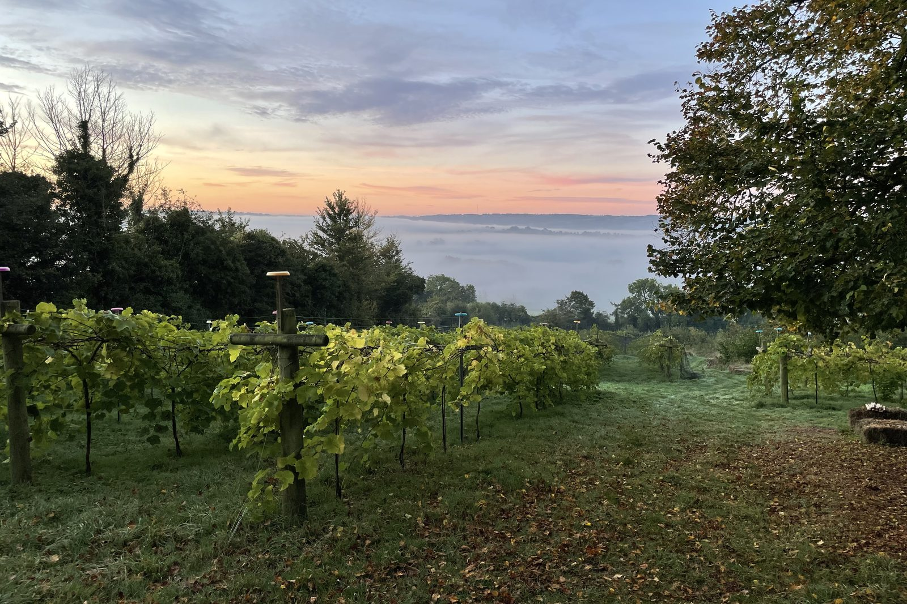

Somerset · South West
Limeburn Hill Vineyard
Estate-verified · November 2026
A Somerset vineyard with public tours on Friday evenings and Sundays from April to September, finishing with a tasting at the top of the hill, plus food-and-wine minibus days.

The visit
Limeburn Hill’s 2027 tour dates are already fixed and on sale, so book ahead rather than turning up.
Public tours in 2027
Dates are fixed and on sale through Eventbrite, or by gift voucher. More tours are unlikely to be added, though there are other events through the year.
The walk up the hill
Tours end with a tasting at the top of the hill: a short walk of a few minutes up a grass path, with a steep section. You can go at your own pace, but it may be hard going if you’re unsteady on your feet.
Good Stories minibus days
Good Stories in Food runs day-long tours to the vineyard and other local producers on the first Friday of the month, May to October: a good option without a car.
Dogs and children
Not advertised, but ask first and the vineyard will help if it suits the group.
Without a car, the Good Stories in Food minibus days (first Friday of the month, May to October) include the vineyard.
Common questions
How do you book a tour at Limeburn Hill?
Through Eventbrite or with a gift voucher; the 2027 dates are already fixed.
Is Limeburn Hill’s tour suitable if you’re unsteady on your feet?
The tasting is at the top of a short but partly steep grass path, so it may be challenging.
Can you visit Limeburn Hill without a car?
Yes, on a Good Stories in Food minibus day, the first Friday of the month from May to October.
At a glance
- Region
- The South West
- Where
- Westfield Farm, Chew Magna, Somerset
- Tours
- Fri evenings and Sundays, Apr–Sep (fixed dates)
- Booking
- Eventbrite or gift voucher
- Access
- Short, steep grass path to the tasting
- Without a car
- Good Stories minibus days
- Dogs and children
- Ask first
Also in The South West
- Aldwick Estate Redhill, near Bristol
- Bantham Vineyard Bantham
- Bluestone Vineyard near Salisbury
- Bride Valley Vineyard Litton Cheney, near Dorchester
- Camel Valley near Bodmin